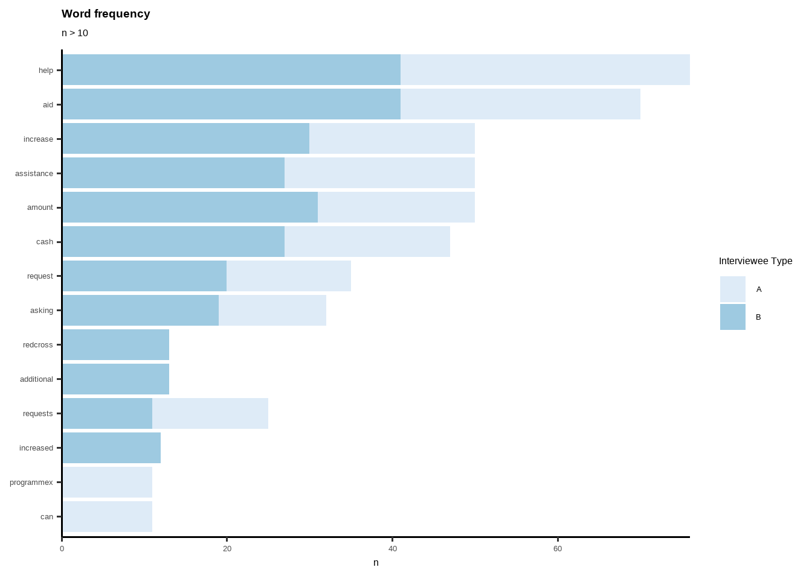
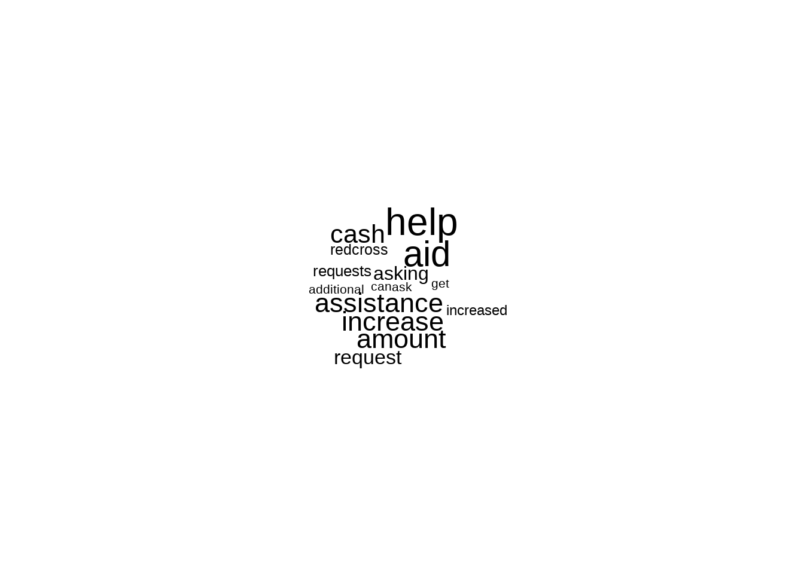

Chapter 6 Inferential Statistics
So far we have mentioned about log frames, indicators, questionnaire design, index calculations for log frames and dashboards. Even with knowledge of these aspects and few field experience and operational design skill set, one can become very skilled M&E Data Analyst. Also analyst needs to have an idea about minimum expenditure baskets, programme design and propsals, a humanitarian programme cycle mentality, general knowledge of CEA, registiration and financal systems (for cash-based). In this section, we will bring some data science element.
6.1 Text Mining
I found that including “more comments from interviewee” is a extremely useful question to add to PDMs, or to any other survey no matter what the modality of data collection is. These columns gives you incredible insights with text mining techniques. Check following examples made by dummy data. In Ukraine when I was in a mission with ICRC, analyzing these columns give me more insight than any other person or field monitoring assistants.
Check “TextMining” excel file. Coding and cleaning these variables are easy. If these comment columns are not in English, just go to google translate and copy-paste translated versions. Add them in a cell, disaggregate them by authors from your main data before translation and enjoy your analysis and very useful insights.
library(dplyr)
trx <- read_xlsx("TextMining.xlsx")
trx1 <- as_tibble(trx) %>%
mutate(document = row_number()) Tokenization
library(dplyr)
library(tidytext)
#Tokenization
trx2 <- trx1 %>%
unnest_tokens(word, Text) %>%
group_by(word) %>%
#filter(n() > 10) %>%
ungroup()Stopwords
#Stopwords
library(stopwords)
library(dplyr)
library(tibble)
stopword <- as_tibble(stopwords::stopwords("en"))
stopword <- rename(stopword, word=value)
trx3 <- anti_join(trx2, stopword, by = 'word')Wordcount
#WordCount
library(dplyr)
word_count_TRX <- count(trx3, word, sort = TRUE)
word_count_TRX## # A tibble: 356 × 2
## word n
## <chr> <int>
## 1 help 76
## 2 aid 70
## 3 amount 50
## 4 assistance 50
## 5 increase 50
## 6 cash 47
## 7 request 35
## 8 asking 32
## 9 requests 25
## 10 redcross 23
## # … with 346 more rowsWordCount by Author
Here author can be different group; such as; females-males, elderly-younglings etc. Each groups reflection might differ from each other, thus it makes a good analysis of disaggregating texts by authors/attendees.
#Word Count by Auth
author_count_TRX <- trx3 %>%
count(Author, word, sort = TRUE)
author_count_TRX## # A tibble: 513 × 3
## Author word n
## <chr> <chr> <int>
## 1 B aid 41
## 2 B help 41
## 3 A help 35
## 4 B amount 31
## 5 B increase 30
## 6 A aid 29
## 7 B assistance 27
## 8 B cash 27
## 9 A assistance 23
## 10 A cash 20
## # … with 503 more rowsData Viz
#GRAPH
trx3 %>%
count(Author, word, sort = TRUE) %>%
filter(n > 10) %>%
mutate(word = reorder(word, n)) %>%
ggplot(aes(word, n)) +
geom_col(aes(fill=Author)) +
xlab(NULL) +
scale_y_continuous(expand = c(0, 0)) +
coord_flip() +
theme_classic(base_size = 12) +
labs(fill= "Interviewee Type", title="Word frequency", subtitle="n > 10")+
theme(plot.title = element_text(lineheight=.8, face="bold")) +
scale_fill_brewer() 
Data Viz by Disaggregation Level
#GRAPH BY AUTH
library(ggplot2)
trx3 %>%
count(Author, word, sort = TRUE) %>%
group_by(Author) %>%
top_n(5) %>%
ungroup() %>%
ggplot(aes(reorder_within(word, n, Author), n,
fill = Author)) +
geom_col(alpha = 0.8, show.legend = FALSE) +
scale_x_reordered() +
coord_flip() +
facet_wrap(~Author, scales = "free") +
scale_y_continuous(expand = c(0, 0)) +
theme_classic(base_size = 12) +
labs(fill= "Interviewee",
title="Most frequent words",
subtitle="Top 5 words by data",
x= NULL,
y= "Word Count")+
theme(plot.title = element_text(lineheight=.8, face="bold")) +
scale_fill_brewer() ## Selecting by nAdding New Stop Words
#NEW STOPWORDS
newstopwords <- tibble(word = c("eq", "eg"))
trx3 <- anti_join(trx3, newstopwords, by = "word")Word Cloud
#CLOUDWORD
library(wordcloud)
trx3 %>%
count(word) %>%
with(wordcloud(word, n, max.words = 15))
Tokenizing by n-gram
library(dplyr)
library(tidytext)
library(tidyr)
library(ggraph)
library(igraph)
library(dplyr)
library(tidytext)
Daily_bigram <- trx %>% #this is raw first data
filter(Author == "A") %>% #select author here
unnest_tokens(bigram, Text, token = "ngrams", n = 2)
Daily_ngram_count <- Daily_bigram %>%
count(bigram, sort = TRUE)
# seperate words
bigrams_separated <- Daily_bigram %>%
separate(bigram, c("word1", "word2"), sep = " ")
# filter stop words and NA
bigrams_filtered <- bigrams_separated %>%
filter(!word1 %in% stop_words$word) %>%
filter(!word2 %in% stop_words$word) %>%
filter(!is.na(word1))
# new bigram counts:
bigram_counts <- bigrams_filtered %>%
count(word1, word2, sort = TRUE)
bigram_theory <- bigrams_filtered %>%
filter(word2 == "assistance") %>% #Select specific text here
count(word1, sort = TRUE)
trigram <- trx %>%
unnest_tokens(trigram, Text, token = "ngrams", n = 3) %>%
separate(trigram, c("word1", "word2", "word3"), sep = " ") %>%
filter(!word1 %in% stop_words$word,
!word2 %in% stop_words$word,
!word3 %in% stop_words$word,
!is.na(word1)) %>%
count(word1, word2, word3, sort = TRUE)
trigram %>% filter(n>3)## # A tibble: 7 × 4
## word1 word2 word3 n
## <chr> <chr> <chr> <int>
## 1 increased cash aid 14
## 2 additional cash assistance 11
## 3 redcross requests increased 7
## 4 redcross wishes increased 7
## 5 requests increased cash 7
## 6 wishes increased cash 7
## 7 red cross wishes 4Network Analysis
library(dplyr)
library(igraph)
# filter for only relatively common combinations
bigram_graph <- bigram_counts %>%
filter(n >= 2) %>%
graph_from_data_frame()
library(ggraph)
set.seed(123)
ggraph(bigram_graph, layout = "fr") +
geom_edge_link() +
geom_node_point() +
geom_node_text(aes(label = name))library(ggraph)
set.seed(123)
a <- grid::arrow(type = "closed", length = unit(.1, "inches"))
ggraph(bigram_graph, layout = "fr") +
geom_edge_link(aes(edge_alpha = n), show.legend = FALSE,
arrow = a, end_cap = circle(.05, 'inches')) +
geom_node_point(color = "lightblue", size = 3) +
geom_node_text(aes(label = name)#, vjust = 1, hjust = 1
) +
theme_void()
Network analysis is one of the best way to understand the context. One can use this for qualitative data analysis, including focus group discussion or key informant interview data. Links between words, and their visibility (reflects how strong the tie between words) gives clear idea of what is the perspective from target population, what links with which concept etc. Lets interpret this network. Cash is in the middle, very important finding, reflects that over all other phenomenon, cash comes first. Than we see “space-citizen”, citizenship of space is mentioned a lot but is not linked with other phenomenons. “Requests-Wishes” linked with increased -which eventually lined with cash and with additional reflects that people are asking from red cross to increase cash amount. We can see that programmex is a cash assistance programme. Cash linked with aid- then linked with food, fee and cashcard. So there is a card, people links food with cash assistance. Also, house rents are linked and on its own, we can emphasis that people are having trouble with house rent, stand alone issue on the left hand side.
Just–wow.. Tons of information just from one variable. Imagine you are monitoring and evaluation data analyst and new to a concept, and you see this! Now you have deeper understanding of what is going on with the context. Use it! Deeper understanding leads to more accurate quantitative data analysis. Great start for a data analyst for the mission.